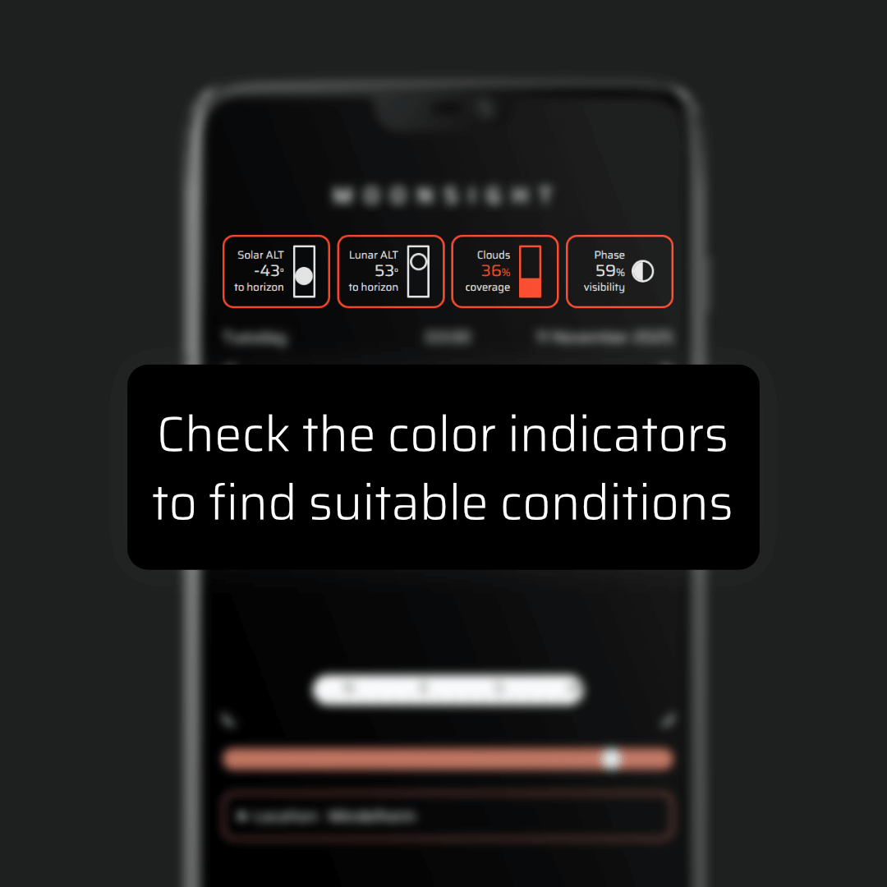
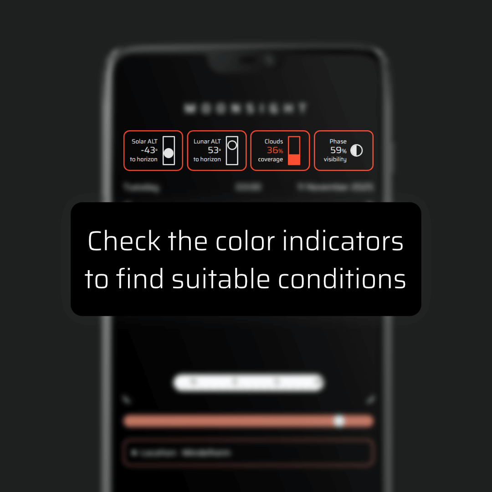
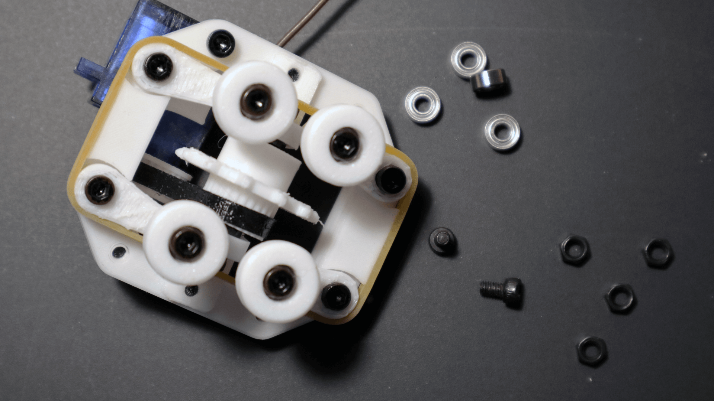
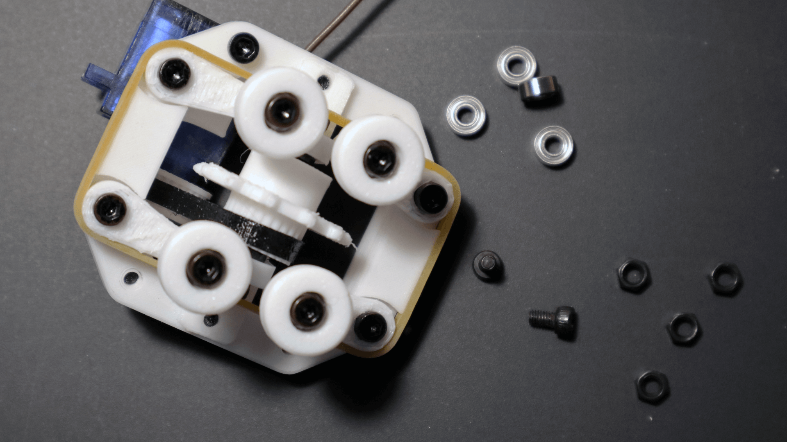
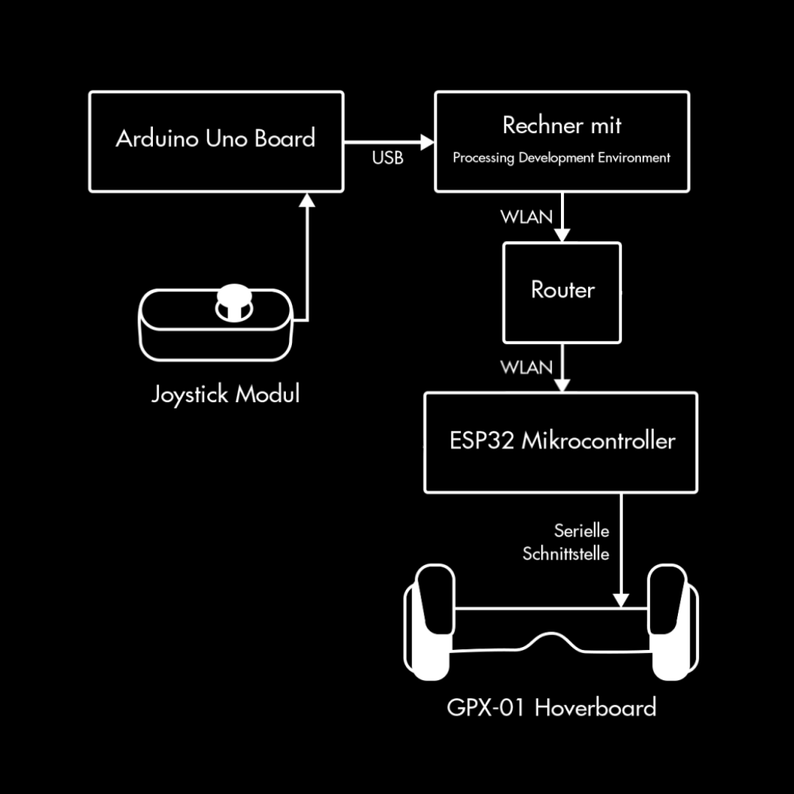
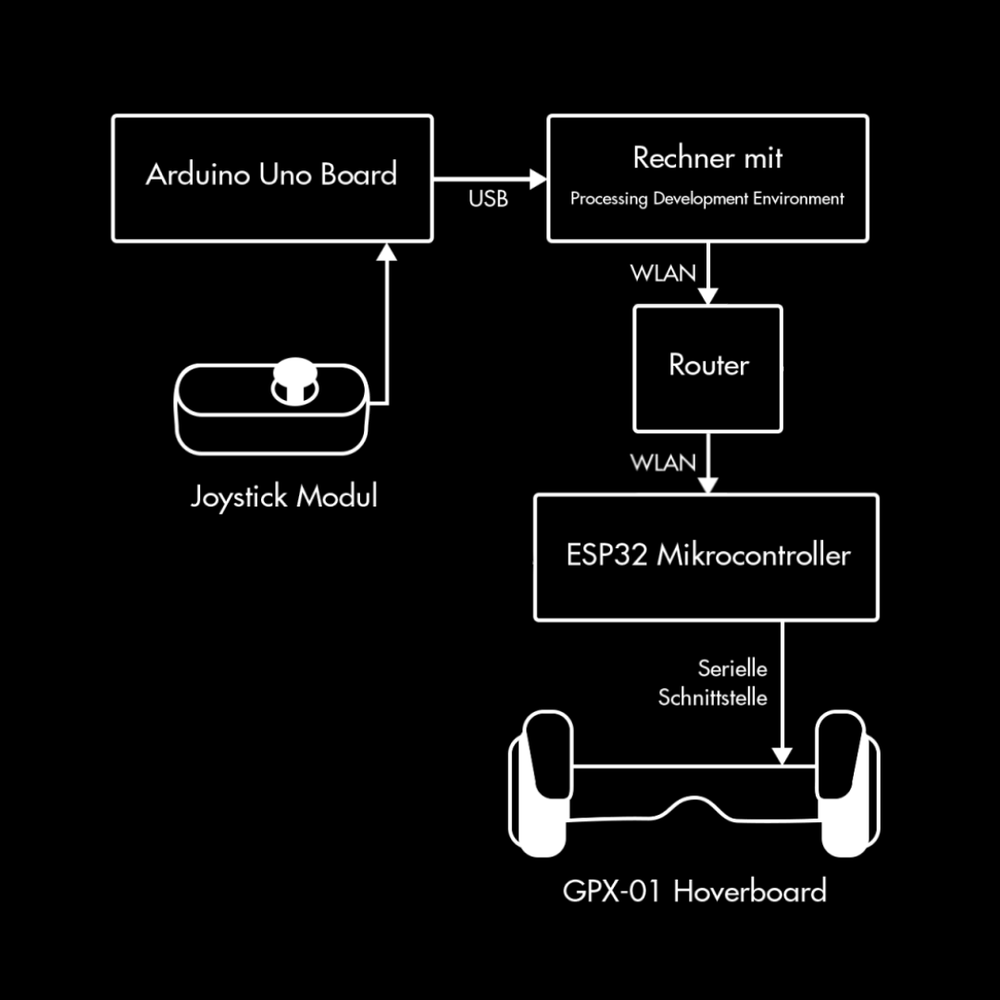

Moonsight
personal web project
This project was conceptualized as a useful tool for observing the moon with a telescope. The web application makes it easy for users to see if there is a suitable time for observation in the following 7 days. The point in time can be changed with a scroll bar and unsuitable conditions get highlighted in color. A visual representation of the conditions is also shown as a graphical canvas.
tools: HTML, CSS, JavaScript, p5.js, SunCalc.js, Open-Meteo API
Not a Box
bachelor project
The goal of this project was to explore the topic of antropomorphism in human-machine interactions. For this, a neutral, inanimate looking robotic body was equipped with motors and a rigid looking but flexible outer mesh. This was done in order to try representing different emotions through movement only, by an object that has a very non-humanlike appearance. The robot uses infrared sensors to detect different hand movements and reacts accordingly.
tools: Arduino, Processing, 3D Printing, Fusion360, Blender
 

Manyway
master project
This 3D logic game was developed with a focus on game design with physical components. The main part of the project was the iterative prototyping process of the rail system and vehicle. A key challenge was finding a balance between the precise fit of different parts and a good usability. The vehicle needs a reliable grip on the track pieces but players should also be able to reposition them easily.
tools: 3D Printing, Fusion360, Blender, Arduino
Game Animation
master team roject
As a team we developed a first prototype for the videogame 'Incredibug'
in which players take the role of a pillbug and explore their gigantic
surroundings. As concept artist and animator of the team I was tasked
with modelling a rollable prototype, and using animation rigs and shape
key tools to give the characters humanlike emotions and expressions.
Team members: Elia Çakar, Michael Braun, Moritz Naab
tools: Blender, Unreal Engine
Camera Bot
university project
Using a webcam and an image classification model the Camera Bot can follow the
direction of a human autonomously. A 3D-printed body and motors allow it to look
around. The prototype was then used for an interaction design project called
'Shitty Camera Bot' where its ability to keep human faces in focus was deliberately
made faulty to poke fun at the human dependency on technology.
The project was mentioned in the Paper 'Training to deal with Otherness', co-authored by
supervising lecturer Andreas Muxel.
tools: JavaScript, ml5.js, Arduino, 3D Printing, Fusion360
 

Chairness of a Chair
university team project
In this design project we gave an everyday object its own agency to see how it would
influence social interactions. Some of my tasks were building controllers and
write code to remote control hacked electric scooter boards to make the chairs move.
Team members: Michael Wagner, Lena Krause, Jane Nathania, Pia Obermaier